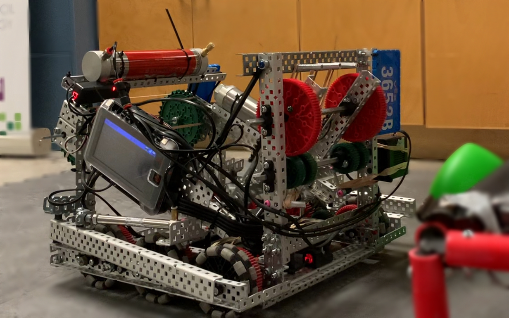
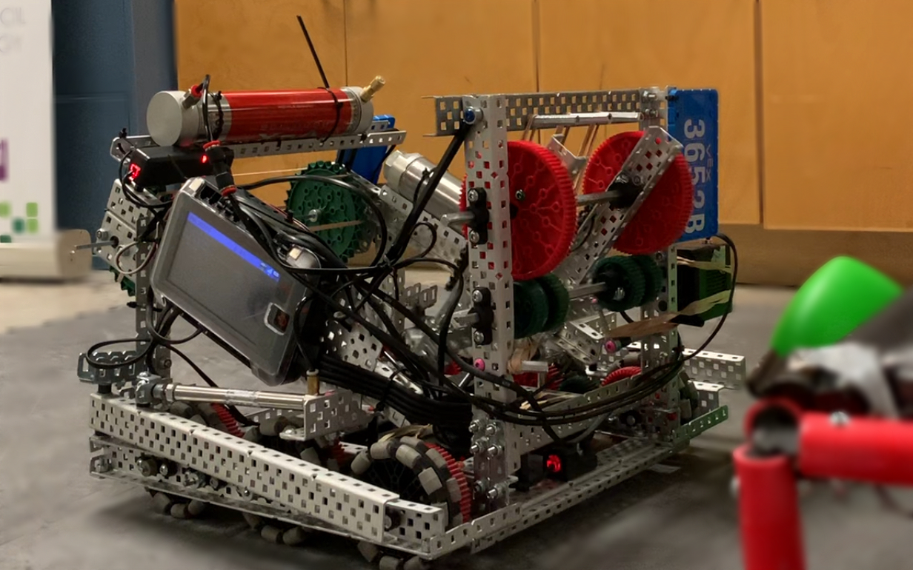
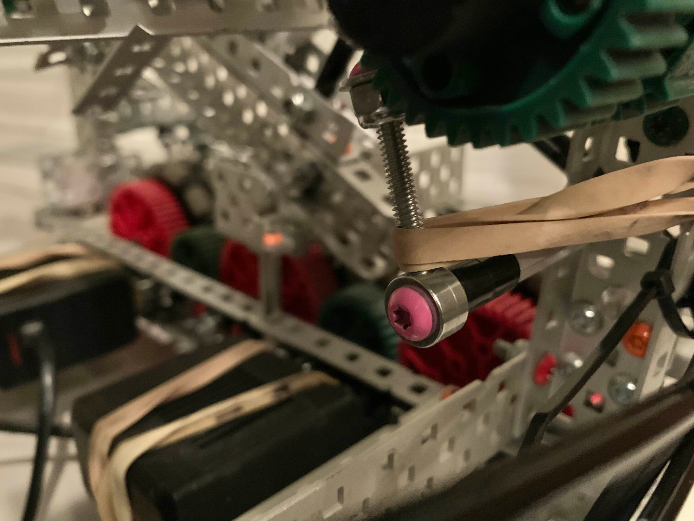
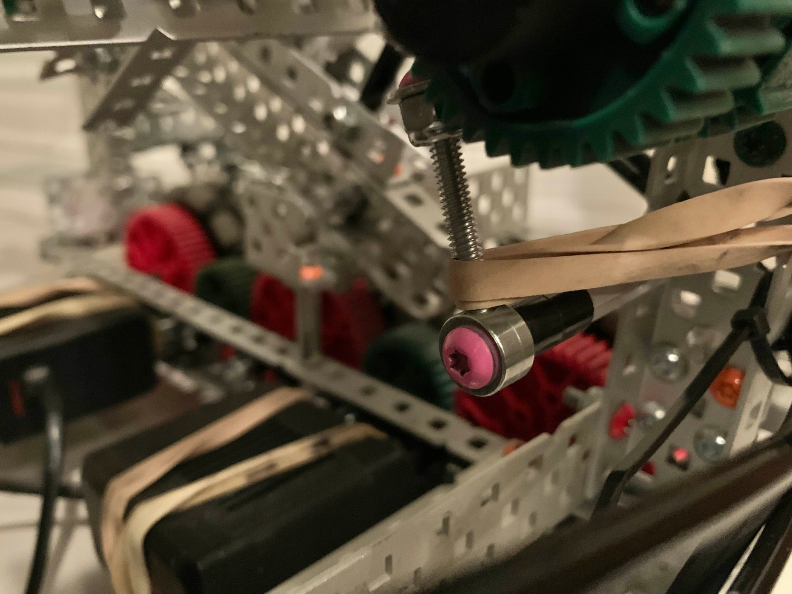

About Me
Hello! My name is Davis and I am a first-year Software Engineering student at the University of Waterloo. I am passionate about STEM fields and their many applications to solving complex problems, particularly those involving computer science.
Outside of school, my interests include robotics, competitive programming, web design, and mathematics.
Projects
DoorSense GitHub: Video Demo:
DoorSense is an embedded smart door system that integrates various sensors with a cross-platform mobile app and on-door display to notify the user of important events. Using a custom-trained neural network, it determines the presence of delivered packages, visitors, and potential intruders through real-time camera footage and delivers these notifications to the user. It also includes a built-in display to relay convenient weather information before the user steps out the door.
Built with: Raspberry Pi, TensorFlow Lite, React Native, Python
 

 

VEX Robotics Learn more:
Joining my high school's VEX team was an important part of my journey into the engineering field. Through teamwork and competition over multiple seasons, we learned valuable lessons about problem-solving and formed lifelong bonds with our teammates.
During the 2023-2024 season, our team, 3652B, worked together on a robot we named "Sniffy". For the first time, I was involved in the CAD and mechanical aspects alongside the programming, where I discovered my interest in mechanical design and engineering fields outside of software.
UHS Robotics Programming Library Learn more:
During my two years at UHS Robotics, we worked on an adaptable programming library for our team's code built with the Perdue PROS API. Our library featured accurate sensing and autonomous driving using self-correcting feedback loops, a simple GUI menu to select between different settings, debugging displays, and various operator-controlled functionality.
Built with: C++, PROS
GuideBot Devpost: GitHub:
GuideBot is a project that I pitched with a team at Hack the 6ix, which aims to create a prototype navigation system for visually impaired individuals using robotics and artificial intelligence.
Although our initial Arduino-based hardware model was insufficiently powerful, our project successfully featured a web-based simulation of the robot's theoretical operation along with an AI object recognition program to enhance its capabilities.
Built with: Arduino, C++, JavaScript, TensorFlow, HTML
IWitness Devpost: GitHub:
This was my first hackathon project, created with a team at YRHacks, which aims to create a surveillance system to aid first responders such as law enforcement and emergency personnel in identifying unexpected situations for a prompt arrival at scene. This project was my first significant exposure to back-end web development as well as neural network libraries such as TensorFlow.
Built with: JavaScript, TensorFlow, HTML
DMOJ UACC Contest Contest page:
I worked with other members of the computer science club at our high school to author a beginner-friendly programming contest that was hosted on the DMOJ online judge. The goal of the contest was to introduce younger students to competitive programming while encouraging more experienced students to explore the process of problem-creation.